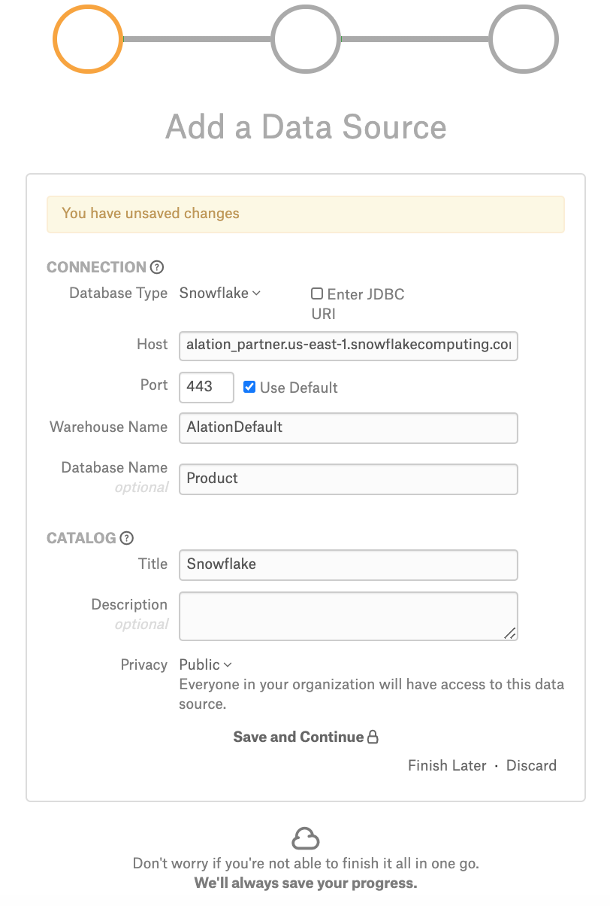
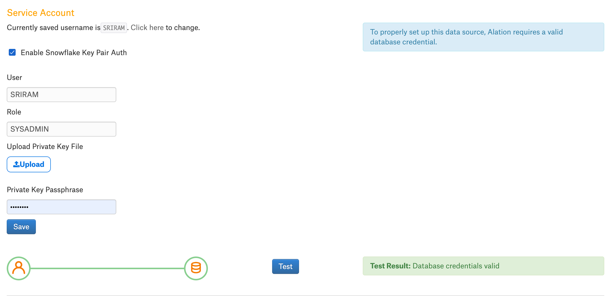
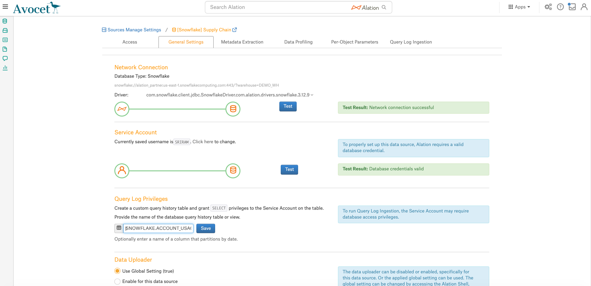

Snowflake¶
Important
Starting August 30, 2023, we will remove the ability to create new data sources using the Snowflake Native Connector. Support for the Snowflake Native Connector will cease on December 1, 2023, as set out in Alation’s Support Policy. See the Transition from Native to OCF Connectors announcement in Alation Community (requires login to Community).
Scope¶
The table below shows what features are covered by the connector.
Feature |
Scope |
Availability |
|---|---|---|
Metadata Extraction |
Extract metadata from data source |
Yes |
Schemas |
Extract schemas |
Yes |
Tables |
Extract tables |
Yes |
Views |
Extract views |
Yes |
Materialized Views |
Extract materialized views |
Yes |
Columns |
Extract columns |
Yes |
Primary Key |
Extract primary keys |
No |
Foreign Key |
Extract foreign keys |
No |
Policies |
Extract Snowflake policies |
Yes |
Tags |
Extract Snowflake tags (from 2022.1) |
Yes |
Source Comments |
Extract source comments |
Yes |
Profiling |
Profile the data |
Yes |
Query Log Ingestion |
Ingest query logs |
Yes |
Lineage |
Build Lineage based on ingested query logs |
Yes |
Compose |
Use Compose to run queries on data source |
Yes |
Required Information¶
To configure Snowflake in Alation, you will need the following information:
Hostname
For instances on AWS:
<account_name>.<region_id>.snowflakecomputing.com:alation_partner.us-east-1.snowflakecomputing.com
For instances on Azure:
<account_name>.<region_id>.azure.snowflakecomputing.com:lj16805.east-us-2.azure.snowflakecomputing.com
Port
The default port is:
443
Warehouse Name
The currently active/running warehouse in your account for which the service account you are going to use in Alation has access privileges
Database Name (optional):
Provide the database name for which you have access privileges.
Note
If the database name is specified, the metadata will be extracted for this specific database only.
If the database name is not provided, the metadata will be extracted for all the databases that the user account provided as a service account in Alation has access to.
This setting does not affect QLI.
Authentication
Snowflake Service Account¶
Under your Snowflake account, set up a user account for Alation. You can also use an existing account. Alation will use it for Metadata Extraction (MDE), Profiling/Sampling, and Query Log Ingestion (QLI). It must be assigned a role that has enough privileges for these data jobs.
Security and account administrators for Snowflake (users with the SECURITYADMIN or ACCOUNTADMIN roles) can create users.
Snowflake connection requires a warehouse and role. A Snowflake user may have multiple roles which give them different access. As a best practice, when setting up a user account in Snowflake for Alation, it is recommended to set a default role and default warehouse for this user.
Example:
Create role for the Alation service account:
CREATE ROLE <alation_role>;
Create Alation Service Account User:
CREATE USER <alation_user> PASSWORD='*****' DEFAULT_ROLE = <alation_role> MUST_CHANGE_PASSWORD = TRUE;
Add a default warehouse:
ALTER USER <alation_user> SET DEFAULT_WAREHOUSE={warehouse_name};
GRANT ROLE <alation_role> TO USER <alation_user>;
GRANT USAGE ON WAREHOUSE <warehouse_name> TO ROLE <alation_role>;
Privileges for MDE¶
The role you are using for the Alation account needs to have access to the INFORMATION_SCHEMA of the database for which you wish to perform MDE:
INFORMATION_SCHEMA.TABLES
INFORMATION_SCHEMA.COLUMNS
INFORMATION_SCHEMA.PROCEDURES
INFORMATION_SCHEMA.FUNCTIONS
INFORMATION_SCHEMA.SCHEMATA
INFORMATION_SCHEMA.VIEWS
Note
When querying an INFORMATION_SCHEMA view or table function, only objects for which the current role has been granted access privileges are returned. For more details, refer to Information Schema in Snowflake documentation.
You can use the following template query to grant privileges. The placeholder <alation_role> stands for the default role of the Alation service account:
USE ROLE ACCOUNTADMIN;
-- Grant access to warehouse if MDE will be performed on a warehouse that is not the default warehouse of the Alation user
GRANT USAGE ON WAREHOUSE <warehouse_name> TO ROLE <alation_role>;
-- GRANT access to Database
GRANT USAGE ON DATABASE <DBNAME> TO ROLE <alation_role>;
-- GRANT access to all schemas in a Database
GRANT USAGE ON ALL SCHEMAS IN DATABASE <DBNAME> TO ROLE <alation_role>;
-- OR grant access to specific schemas in Database
GRANT USAGE ON SCHEMA <DBNAME.SCHEMANAME> TO ROLE <alation_role>;
-- Grant access to all tables in all schemas in Database
GRANT SELECT ON ALL TABLES IN DATABASE <DBNAME> TO ROLE <alation_role>;
-- OR grant access to all tables in specific schemas
GRANT SELECT ON ALL TABLES IN SCHEMA <DBNAME.SCHEMANAME> TO ROLE <alation_role>;
-- OR grant access to specific tables
GRANT SELECT ON TABLE <DBNAME.SCHEMANAME.TABLENAME> TO ROLE <alation_role>;
-- OR grant access to all views in all schemas in Database
GRANT SELECT ON ALL VIEWS IN DATABASE <DBNAME> TO ROLE <alation_role>;
-- OR grant access to all VIEWS in specific schemas
GRANT SELECT ON ALL VIEWS IN SCHEMA <DBNAME.SCHEMANAME> TO ROLE <alation_role>;
-- OR grant access to specific views
GRANT SELECT ON VIEW <DBNAME.SCHEMANAME.VIEWNAME> TO ROLE <alation_role>;
-- OPTIONAL: allow access to future objects
USE ROLE ACCOUNTADMIN;
-- OPTIONAL: GRANT access to future schemas (not yet created)
GRANT USAGE ON FUTURE SCHEMAS IN DATABASE <DBNAME> TO ROLE <alation_role>;
-- OPTIONAL: grant access to future tables in database
GRANT SELECT ON FUTURE TABLES IN DATABASE <DBNAME> TO ROLE <alation_role>;
-- OR grant access to future tables in specific schemas
GRANT SELECT ON FUTURE TABLES IN SCHEMA <DBNAME.SCHEMANAME> TO ROLE <alation_role>;
-- OPTIONAL: GRANT access to future views in database
GRANT SELECT ON FUTURE VIEWS IN DATABASE <DBNAME> TO ROLE <alation_role>;
-- OR grant access to future tables in specific schemas
GRANT SELECT ON FUTURE VIEWS IN SCHEMA <DBNAME.SCHEMANAME> TO ROLE <alation_role>;
Privileges for Profiling/Sampling¶
To profile a table, the connected account needs SELECT privileges on this table:
GRANT SELECT ON TABLE <DBNAME.SCHEMANAME.TABLENAME> TO ROLE <alation_role>;
Privileges for Query Log Ingestion¶
QLI requirements depend on your Alation release.
Releases V R6 (5.10.4) and below¶
Alation performs QLI using the QUERY_HISTORY table function of the INFORMATION_SCHEMA which allows for extracting a maximum of 10,000 query logs for the last 7 days, which is optimized to fetch 10,000 query logs for the last 24 hours.
There are no specific requirements for the privileges for the service account.
Starting from V R6 (5.10.5) and above¶
Starting with V R6 (5.10.5), Alation supports QLI on the INFORMATION_SCHEMA (as in prior releases) and QLI on the ACCOUNT_USAGE.QUERY_HISTORY view of the SNOWFLAKE database (recommended).
The use of the ACCOUNT_USAGE.QUERY_HISTORY schema for QLI helps overcome the limitation of the INFORMATION_SCHEMA which only allows to extract 10,000 logs for the last 24 hours.
To use the ACCOUNT_USAGE.QUERY_HISTORY view for QLI, grant IMPORTED PRIVILEGES on the SNOWFLAKE database to the default role of the user account you are going to use in Alation. This can be done by a user with the ACCOUNTADMIN role or by any user who has access to the SNOWFLAKE database:
GRANT IMPORTED PRIVILEGES ON DATABASE SNOWFLAKE TO ROLE <alation_role>;
If for some reason access to the SNOWFLAKE database cannot be granted to this user account, create a general or secure view based on a query of the SNOWFLAKE.ACCOUNT_USAGE.QUERY_HISTORY view then grant:
USAGE privileges on the database and schema where the view is created
SELECT privileges on the created view -
to the role of the user account you are going to use in Alation. Remember to replace the placeholder values in red with your actual values:
CREATE OR REPLACE [SECURE] VIEW <DBNAME>.<SCHEMANAME>.<VIEWNAME> AS
SELECT
START_TIME,
DATABASE_NAME,
SCHEMA_NAME,
WAREHOUSE_NAME,
ERROR_MESSAGE,
QUERY_TYPE,
TRIM(QUERY_TEXT) as QUERY_TEXT,
QUEUED_PROVISIONING_TIME,
QUEUED_REPAIR_TIME,
QUEUED_OVERLOAD_TIME,
TRANSACTION_BLOCKED_TIME,
USER_NAME,
COMPILATION_TIME,
EXECUTION_TIME,
QUERY_ID,
ERROR_CODE,
SESSION_ID
FROM SNOWFLAKE.ACCOUNT_USAGE.QUERY_HISTORY;
GRANT USAGE ON DATABASE <DBNAME> TO ROLE <alation_role>
GRANT USAGE ON SCHEMA <DBNAME>.<SCHEMANAME> TO ROLE <alation_role>
GRANT SELECT ON VIEW <DBNAME>.<SCHEMANAME>.<VIEWNAME> TO ROLE <alation_role>
Key Pair Authentication¶
Alation supports the Key Pair Authentication method for the service account connection to Snowflake. To use Key Pair Authentication, a number of Key Pair Authentication-relevant parameters need to be included into the Snowflake URI in the Alation Catalog.
Key Pair Authentication requires preliminary configuration on Snowflake and the Alation server side before the Snowflake data source is added to the Catalog.
Configuration on the Snowflake Side¶
Generate and assign a key pair to the user account you created for Alation. Refer to Key Pair Authentication & Key Pair Rotation for details.
Once the private key is generated, store the private key securely in your local machine as it needs to be uploaded in Alation while configuring the key pair authentication.
Configuration on the Alation Server Side¶
Version 2022.1 and Newer Versions¶
You will need to upload the private key file in the General Settings > Service Account section of your Snowflake data source after adding this data source to the Catalog. The steps to upload the file are described below in Authentication with the Key Pair.
Version 2021.4 and Older Versions¶
You need to upload the private key file to the Alation host and place it inside the Alation shell. To upload the file, follow these steps:
SSH to the Alation host and inside the Alation Chroot, create a folder and copy the private key file into this folder. The Alation chroot is located at /opt/alation/alation-X.X.X.X, where X.X.X.X represents the version of Alation that’s installed.
Change ownership of the private key file to
alation:sudo chown alation:alation rsa_key.p8
Note down the path to the private key file inside the Alation Chroot. You will need to provide this path in the URI field in Alation.
Build the URI¶
Version 2022.1 and Newer¶
Build the URI with the following parameters:
Hostname
Port
Warehouse Name
Database Name (Optional)
Note
Key Pair Authentication values must be provided in the General Settings > Service Account section and should not be included in the URI. Refer to Authentication with the Key Pair.
Format:
snowflake://<Hostname>:<Port>/?warehouse=<Warehouse_Name>&db=<Database_Name>
Example:
snowflake://alation.snowflakedb.com:443/?warehouse=EX_DEMO&db=EX_SNOWCASE
Version 2021.4 and Older¶
To build the URI for Snowflake connection with Key Pair Authentication, the URI has to include the parameters that pass the path to the private key file and the passphrase. Include the following parameters to build the URI:
user: username of the service account
role: role of the service account
private_key_file: path to the private key file inside the Alation shell
private_key_file_pwd: the passphrase, if set for the private key file. Note that currently, the passphrase has to be provided as a plain text parameter value which will be visible to Data Source Admins in the URI string on the data source Settings page.
authenticator:
authenticator=snowflake_jwt
Example:
snowflake://caa03991.us-east-1.snowflakecomputing.com:443/?user=alation&role=alation_admin&private_key_file=/snowflakeKPA/rsa_key.p8&private_key_file_pwd=1234&authenticator=snowflake_jwt
URI to Extract Policies¶
The Snowflake URI must include the default database name as shown below to extract the policies from a particular database, if not all the policies will be extracted from the complete Snowflake data source.
snowflake://alation_partner.us-east-1.snowflakecomputing.com:443/?warehouse=OXY_WH&db=PC_DB
Compose¶
The Default connection URI that includes the Key Pair Authentication parameters can also work as the Default Compose connection. A restart of Alation is required after the data source is set up in order to use the Default connection in Compose.
Note
Key Pair Authentication for individual user account connections from Compose is currently not supported.
Key Pair Authentication for Snowflake OAuth in Compose is currently not supported. Snowflake OAuth uses authentication based on the provided Client ID and Secret.
Steps in Alation¶
Basic Authentication with Username/Password¶
Note
The steps in this section are applicable only for the basic authentication with username/password. For key pair authentication, perform the steps in Key Pair Authentication (URI) section.
To add a Snowflake data source to Alation,
Follow the instructions in Add Data Sources to bring up the Add Data Source wizard.
On Step 1 of the Add Data Source wizard provide the connection information for your new source:
In the Database Type list select Snowflake;
In the Host field, provide the hostname.
In the Port field, type the port number or leave the defaults;
In the Warehouse Name field, specify the name of the warehouse you would like to catalog in Alation;
Optionally, in the Database Name field, specify the name of the database. If the database name is provided, metadata will be extracted for this particular database only. If the database name is not provided, the metadata is extracted for all the databases that the user account you will provide in Alation has access to.
Under Catalog, provide the Title, Description, and Privacy settings, and click Save and Continue:

{kind=link}
Step 2 of the Add Data Source wizard will open. At this stage, provide your service account information then click Save and Continue:
{kind=link}
The next step of the wizard will open. This step is devoted to QLI setup. Click Skip This Step. You can set up QLI later on the Settings page of the data source.
Key Pair Authentication (URI)¶
To add a Snowflake data source using Key Pair Authentication,
Follow the instructions in Add Data Sources to bring up the Add Data Source wizard.
On Step 1 of the Add Data Source wizard, select the Enter JDBC URI checkbox.
Enter the URI you have built for the key pair authentication.
For version 2021.4 and older versions, enter the URI using the format described in Version 2021.4 and Older.
For version 2022.1 and newer versions, enter the URI using the format described in Version 2022.1 and Newer.
Note
From version 2022.1, Key Pair Authentication values must be provided in the General Settings > Service Account section and should not be included in the URI.
{kind=link}
Under Catalog, provide the Title, Description, and Privacy settings, and click Save and Continue.
Step 2 of the Add Data Source wizard will open. At this stage, select the Yes radio button for the service account, then specify the Username and leave the Password field empty. Click Save and Continue.
{kind=link}
The next step of the wizard will open. This step is devoted to QLI setup. Click Skip This Step. You can set up QLI later on the Settings page of the data source.
If you intend to use the key pair authentication-based default connection in Compose, restart Alation:
sudo /etc/init.d/alation shell alation_action restart_alation
Complete the Configuration¶
After you have walked through the Add Data Source wizard screens, your source will be added to Alation and you will land on the Access tab of the data source Settings page:
{kind=link}
Access Tab¶
On the Access tab, you can change the data source Privacy settings and give/remove access to/from users.
General Settings¶
On the General Settings tab, you can edit the connection parameters, specify miscellaneous data source information, and configure authentication with Snowflake OAuth for Compose users.
Authentication with the Key Pair¶
Version 2022.1 and newer
If you chose to use key pair authentication instead of authentication with the username and password, you need to upload the private key file for your data source. In the Service Account section, perform the following steps for key pair authentication:

Select the Enable Snowflake Key Pair Auth checkbox.
Specify the values for the key pair authentication fields based on the description in the following table:
Parameter
Description
User
Provide the user name of the service account that has the public key assigned to it.
Make sure that the username provided here is the same as the service account username provided in the course of the data source configuration.
Role
Provide the role of the service account user with the public key.
Password
Provide the service account password.
Upload Private Key File
Click the Upload button to upload the private key file.
Private Key Passpharse
Provide the passphrase of the private key file.
Click Save.
Click Test to validate network connectivity.
{kind=link}
Metadata Extraction (MDE)¶
You can perform MDE on the Metadata Extraction tab of the Setting page. No specific pre-configuration is required.
From 2021.3:
Materialized views will be extracted during the Metadata Extraction.
From 2021.4:
External tables will be extracted during the Metadata Extraction. The catalog page displays the location of the base file of the external table in the right pane.
{kind=link}
From 2022.1:
Snowflake tags will be extracted during Metadata Extraction, if the feature has been enabled and the required setup has been performed. See Snowflake Tags for more information.
Query Log Ingestion (QLI)¶
Available starting from version V R2 (5.4.x).
Note
MDE must are performed before attempting QLI.
There are differences in how Snowflake QLI can be configured depending on your Alation version.
Releases V R6 (5.10.4) and below¶
Alation reads query logs from their default location in the INFORMATION_SCHEMA. No specific configuration is required for Alation to read the logs. You can perform QLI on the Query Log Ingestion tab of the Setting page.
Note
QLI over the INFORMATION_SCHEMA is limited to ingesting 10,000 logs from the last 24 hours due to the specifics of the QUERY_HISTORY table function of this schema.
Starting from V R6 (5.10.5) and above¶
Default¶
By default, QLI is based on INFORMATION_SCHEMA.QUERY_HISTORY. With no additional configuration, Alation will use the QUERY_HISTORY table function of the INFORMATION_SCHEMA for QLI.
Recommended¶
You can configure QLI to use the ACCOUNT_USAGE.QUERY_HISTORY view. This is a recommended approach that lets overcome the limitation of 10,000 query logs of the INFORMATION_SCHEMA. This approach requires that some configuration should be performed in Alation before running QLI.
Note
Make sure the user account you are using in Alation is given the required privileges for the SNOWFLAKE.ACCOUNT_USAGE.QUERY_HISTORY view. See Privileges for Query Log Ingestion.
To configure QLI based on the SNOWFLAKE.ACCOUNT_USAGE.QUERY_HISTORY view, do the following:
On the data source Settings page, General Settings tab, in the Query Log Privileges section, specify either:
directly the view SNOWFLAKE.ACCOUNT_USAGE.QUERY_HISTORY - if the user account you have provided in Alation is granted the required privileges to the ACCOUNT_USAGE.QUERY_HISTORY view of the SNOWFLAKE database;
Or the qualified name of a view you have created for Alation QLI off the SNOWFLAKE.ACCOUNT_USAGE.QUERY_HISTORY view: <DBNAME>.<SCHEMANAME>.<VIEWNAME>.
Note
If the Query Log Privileges field is left blank, QLI will be performed based on the QUERY_HISTORY table function of the INFORMATION_SCHEMA.
{kind=link}
Click Save.
Go to the Query Log Ingestion tab and perform QLI.
Per-Object Parameters¶
We recommend setting per-object parameters before you perform Profiling.
MDE must are performed for you to see the extracted metadata on the Per-Object Parameters page.
Data Profiling¶
MDE must have been performed before Profiling.
Lineage¶
From 2021.4, column-level lineage is supported for the Snowflake data source in addition to table-level lineage.
Note
This feature requires the Snowflake Column-Level Lineage parser add-on. Contact Alation Support about purchasing this add-on.
Enable Column-Level Lineage¶
To enable column-level lineage:
{kind=link}
{kind=link}
View Column-Level Lineage¶
When you enable the column-level lineage add-on, Alation will automatically generate column-level lineage data based on the existing metadata that was previously extracted with MDE, QLI, or ingested from Compose.
Note
Once the feature flag is enabled, the column-level lineage will be automatically generated only for the view definitions that are complete and already added to table-level lineage.
Complete view definition:
CREATE VIEW adbc_database_01.query_execution_main.table_view AS SELECT src.* FROM (SELECT col1, col2, col3 FROM tpch.sf1.customer LIMIT 10) src;Incomplete view definition:
SELECT src.* FROM (SELECT col1, col2, col3 FROM tpch.sf1.customer LIMIT 10) src;
More column-level lineage data will be created after you perform metadata extraction (MDE), query log ingestion (QLI), and (or) use Compose to run queries that create or update column objects.
To view column-level lineage data:
Go to the Lineage tab on the catalog page of a table object that should have column-level lineage.
Expand the table or view lineage node to see the columns of the table or view and links to the dataflow object.
{kind=link}
{kind=link}
When you expand a table or view lineage node and click one of the child columns, the column-level lineage link for that particular column becomes highlighted.
{kind=link}
Note
If the column-level lineage feature flag is disabled, the column-level lineage links that were generated previously are not removed. Only the future queries and query history will not be processed.